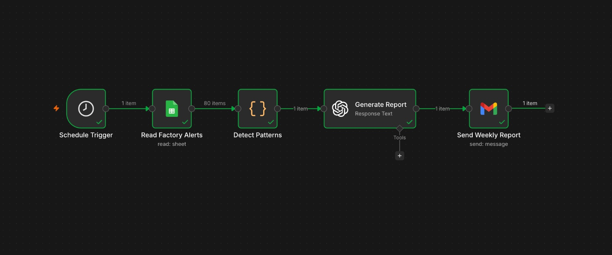

Turning Repeat Alerts Into One Diagnosis Instead of Four
An automated Monday morning report that reads a month of factory alert data and tells a plant manager which gates are failing, how, and why, before their workday starts.
Aliment's control room dashboard alerts the plant manager when something goes wrong right now. What it doesn't do is tell them when the same thing has been going wrong every Tuesday morning for four weeks in a row. Each alert looks like a new incident on its own. The root cause never actually gets addressed, and the same material loss just repeats.
This came from looking closely at Aliment's own proposal document. One screenshot shows a live alerts panel (a patty rejection, a paneer yield deviation, an early FIFO breach risk, each timestamped and severity tagged), but nothing in that panel links out to a pattern view or an alert history by gate. Another page shows the only historical view in the product, an OEE trend chart, but it's a single aggregate number for the whole plant. It doesn't break down by which gate failed, on which shift, or on which day of the week.
I don't have access to Aliment's internal tools, so I can't confirm how often this actually happens in production. What I can say is that nothing in either document mentions a pattern view or a proactive analysis layer, and their own materials use the word reactive to describe how compliance evidence gets compiled today. That same word applies to how alerts get handled. A gate that rejects material every Tuesday morning for four weeks isn't four incidents, it's one undiagnosed problem compounding quietly.
What I Designed
I designed a Weekly Pattern Digest: an automated Monday morning email that identifies which gates are failing, how they're failing, and what type of problem it actually is.
It looks for three distinct pattern types, because different gates tend to fail for different reasons:
Scenario A, Time Problem: the same gate fires alerts on multiple different days during early morning within the same week. This points to a startup or equipment warmup issue, not tied to any specific day.
Scenario B, Day Problem: the same gate fires early morning alerts on the same day of the week, repeating across multiple consecutive weeks. This points to something specific about that day, a supplier delivery pattern, a particular shift operator, or a weekly maintenance cycle the night before.
Scenario C, Reliability Problem: a gate has significantly more total alerts than the plant average, regardless of time or day. This points to general equipment degradation that needs a physical inspection.
"This case study was built as part of my interview process with Aliment."
How It Works
Built as an n8n workflow, running five nodes in sequence.

[ Image Error: Aliment_N8n_Workflow.jpeg not found ]
Every Monday at 8 AM, the Schedule Trigger fires automatically.
A Google Sheets node reads all rows from the factory alert log, 80 rows across 23 gates, as structured data. In this prototype, that sheet stands in for Aliment's actual alert database; in a real deployment, this node would be replaced with a direct connection to their alert system, and the rest of the workflow stays identical.
A Code node filters to the last 28 days and runs all three pattern analyses. For Scenario A, it looks at every alert between 6 AM and 8:30 AM, groups by gate and week, and flags any gate that fired early morning alerts on two or more different days in the same week. For Scenario B, it groups the same early morning alerts by gate and day of week, and flags anything repeating on the same day across two or more weeks. For Scenario C, it counts total alerts per gate across all times, calculates the plant average, and flags any gate sitting 50 percent or more above it.
All three results go to GPT 4.1 Mini with a structured prompt: act as an operations analyst, here's the pattern data, write three sentences per pattern in plain language with no jargon, one recommended action per finding, and a plant health summary under 250 words at the end.
Gmail sends the finished report with the subject line "Weekly Pattern Report, Aliment Factory, [today's date]."
Running this against the dummy data, the report correctly picked out Gate 21 as both a Scenario A and B problem firing on Tuesdays, Thursdays, and Fridays before 7:15 AM, Gate 09 as a Scenario B problem repeating on Tuesday mornings across weeks, and Gate 18 as a Scenario C reliability problem, sitting at 12 alerts against a plant average of 4.
Key Design Decisions
28 days as the lookback window: a week is too short, since some patterns, especially Scenario B, only show up once the same day repeats across multiple weeks. Three months brings in too much noise from seasonal shifts or product line changes. 28 days gives exactly four weeks, enough to confirm a real pattern while staying close enough to today for a plant manager to actually act on it.
Three separate pattern types instead of one: different gates fail for different reasons, and a single detection approach would catch some problems while completely missing others. Reading one email that covers all three types gives a plant manager the complete picture in one read, instead of checking different dashboards for different problem types.
What This Demonstrates
Finding a real product gap by reading actual product screenshots closely, not just assuming one exists.
Defining distinct categories of a problem instead of treating every anomaly the same way.
Building something that actually runs and produces a real, readable output, not just a proposed idea.